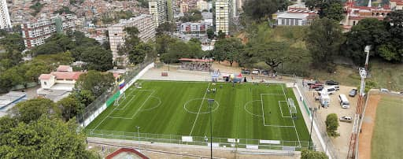

El fútbol venezolano ha tenido una evolución positiva durante los últimos años, esto se puede ver reflejado en los resultados históricos que ha conseguido la selección, las buenas participaciones de los equipos en torneos internacionales y el desempeño de varios jugadores en el exterior, dejando grandes actuaciones. A pesar del buen progreso a nivel profesional, también es muy importante saber cómo se forman los que pueden ser el futuro de la Vinotinto, jugadores que desde temprana edad muestran un gran talento futbolístico, que los convierten en promesas.
El oeste de Caracas, cuentan con distintas escuelas de fútbol, que actualmente se han visto afectados por la cuarentena y esa falta de poder entrenar, pisar el campo nuevamente y disputar los torneos que se tenían programado para este año. Sin embargo, en el presente blog se mostrará los próximos proyectos de un equipo infantil y juvenil, en donde se plantean mantener el ritmo desde casa. También la corta trayectoria de un joven jugador que juega en uno de los grandes equipos del 23 de Enero y Caracas. Por último, una crónica vivida y redactada por uno de los autores de este proyecto.
CRÓNICA
DEBUT DE DISTRITO ENTRE TIROS Y ARMAS

Sábado, 5 de marzo del año 2016, se cumplía tres años de la muerte del expresidente Chávez, para ese día comenzaba el ansiado y esperado torneo de Distrito, el cual tenía dos semanas de retraso. El Deportivo Novaires FC, con su sede en Vista Alegre, era mi equipo desde los 13 años, ya llevaba tiempo, pero era la primera vez que jugaríamos este torneo del fútbol base que era muy mencionado por muchas personas.
La convocatoria para el partido del debut contra escuela de fútbol San Bernandino A.C la haría el profesor unos días antes, en el cual salí convocado junto con mis compañeros y algunos amigos que eran de una categoría superior, la sub 18 que también debutarían el mismo día. La parroquia 23 de Enero sería la sede, un lugar que con solo nombrarlo ya me imaginaba una cantidad de cosas negativas y peligrosas.
Llegó el gran día, me desperté a las 9 am y revisé mi celular, tenía un mensaje que me recordaba que debía estar a la 1 pm en la cancha del sector “La Planicie”. Me bañé, me alisté y fui a sacarme las fotos tipo carnet para la ficha. Regresé a las 11 am, desayuné y llamé a unos amigos con los que acordé en encontrarnos a las 12:30 en la estación de Metro Agua Salud, lo que se me hacia cerca, ya que siempre he vivido a dos cuadras.
Ya era las 12:15 pm, estaba a punto de salir, mientras alistaba mis cosas veo que en las noticias mencionaban el tercer aniversario de la muerte de Chávez, pero sin casi prestarle atención, agarré mi bolso y me fui. 12:40 pm y ya todos nos habíamos encontrado, con 10 minutos de retraso a la hora que acordamos. Subimos a la parada de las camionetas y tomamos una que nos llevaría cerca de la planicie.
Llegamos a la parada y nos bajamos, caminamos entre uno de los famosos bloques del 23 de Enero para llegar a nuestro destino, pero en el trayecto vimos a un grupo de muchachos bien armados, el cual se nos acercaron preguntando la hora, la típica pregunta que te hace alguien para robarte, pero cuando se dieron cuenta que llevábamos los implementos futbolísticos, nos dejaron ir. En ese momento todos sentimos temor hasta llegar a la cancha de fútbol campo.
Ya en nuestro destino, con uniformes en mano, mientras nos cambiábamos les contábamos a los demás sobre el susto que nos dimos y los muchachos que andaban armados hasta por los dientes, habíamos acordado en que todos nos íbamos juntos cuando terminara el partido. Saliendo de los vestidores fui a dejar mi bolso en un lugar seguro, pues en ese momento no confiaba en nadie que no conociera bien.
Entrando al campo, el árbitro nos pide la ficha o las cédulas, luego toda la sub 16 empieza a calentar en una parte del campo, en la otra mitad se encuentra San Bernandino A.C quienes jugarían de local. Ya calentados y listos, el entrenador del Novaires da la alineación titular, en donde entro yo a jugar después de mucho tiempo como defensa central, ya que en años anteriores con el equipo jugaba de medio campo defensivo.
Era la 1:30 pm, ya todo estaba listo, el árbitro ajustaba el cronometro y sonaba el pitazo inicial del partido, el debut ya se estaba jugando, Deportivo Novaires FC vs San Bernandino A.C en la categoría sub 16. Con un sol muy potente, en una cancha no tan larga, había transcurrido ya 10 minutos de partido y en ese momento el susto que habíamos pasado se me olvidó por completo, estaba concentrado en buscar los primeros 3 puntos en el torneo.
El equipo local comenzaba a atacar más seguido que en los primeros minutos, les gustaba lanzar más balones aéreos, ya que contaban con jugadores más altos que la mayoría de nosotros. Cerca de terminar el primer tiempo, mandan un balón con efecto, mi compañero en la saga central y yo nos desentendimos y cometimos un error que nos costaría un gol, los regaños del profe no se hacían espera y así culminaba el primer tiempo.
En el descanso corregiríamos algunas cosas y saltábamos al campo para disputar el segundo tiempo. Ya el balón había rodado y empezábamos a atacar nosotros, teníamos acorralados al rival, pero nada que aparecía el gol. El entrenador comenzaba a efectuar algunos cambios, entre ellos entra un delantero con algo de sobrepeso, se le dificultaba correr y teníamos el marcador abajo, yo no podía creer, pero algo me decía que fue un buen cambio.
15 minutos después y faltando 8 para que terminara el partido, efectivamente el cambio del que todos dudaban anotaría el empate, en ese momento los ánimos se subieron y estábamos decididos a buscar la victoria. Conseguimos sobre el final la ventaja de 2 a 1, pero el juez central lo anularía por un fuera de jugo sospechoso, en ese momento sentí que tanto esfuerzo no había servido, pues nos acababan de robar el gol de los 3 puntos.
Terminaba el partido con un empate para ambos equipos, un juego limpio y atractivo que para muchos aficionados les había parecido el mejor de ese día. Nos saludamos con el rival y nos fuimos a los vestidores, nos cambiamos y esperamos a unos amigos de la sub 18 que tenían partido. Las 4:30 pm y ya todo había terminado, así que nos fuimos de camino a casa, pero varios habían olvidado lo que acordamos antes del juego, irnos juntos.
Caminábamos el mismo combo que vinimos, por la misma calle, pero en esta ocasión vimos que estaban peleando unos colectivos con otra banda y un señor se nos acerca y nos dice: “váyanse de aquí, antes de que se prenda lo feo.” Corrimos hasta la parada, pero cuando llegamos y esperábamos la camioneta empezaría lo peor.
De un momento a otro, comenzaron a sonar unos tiros, todos nos tuvimos que esconder arrinconados en una cantina, uno de nosotros se asomó a ver de dónde era y efectivamente eran los mismos colectivos que se estaban matando con armas de fuego. Al mismo tiempo, sonó varias ametralladoras, pero desde otra parte, mis amigos y yo estábamos confundidos y a la vez asustados, pensamos que una bala perdida podría acabar con nuestras vidas.
Veíamos a todos correr, adultos y niños, era una locura, parecía que de un buen partido de fútbol habíamos saltado a una guerra y teníamos que luchar por sobrevivir y ya no por 3 puntos. El señor de la cantina nos invita a entrar y nos dice: “No se asusten, porque esto pasa casi siempre.” Además nos explica que las ametralladoras eran en honor al aniversario de la muerte Chávez.
5 pm y todo se había calmado, llegó una camionetica que nos bajaría hasta el Metro, luego me despedí de varios amigos y caminé hasta mi casa, ya cuando llegué me senté en el sofá y a la vez comencé a reír, no creía lo que había vivido, fue un día único, pero también horrible. Tuve un gran partido, con el equipo conseguimos 1 punto de visita que no estaba nada mal y sobreviví a una pequeña guerra entre tiros y armas en la que quedé atrapado.
Por: Omar Yauripoma